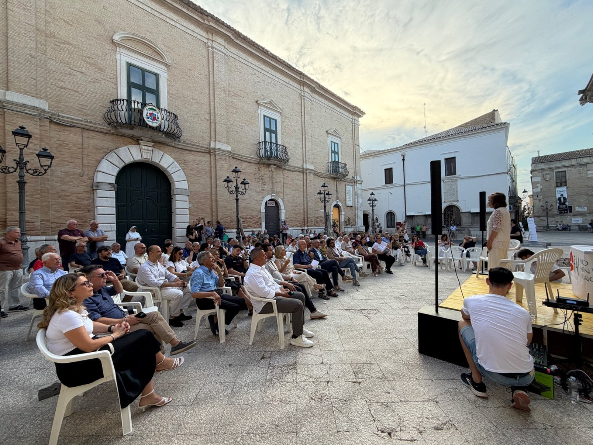
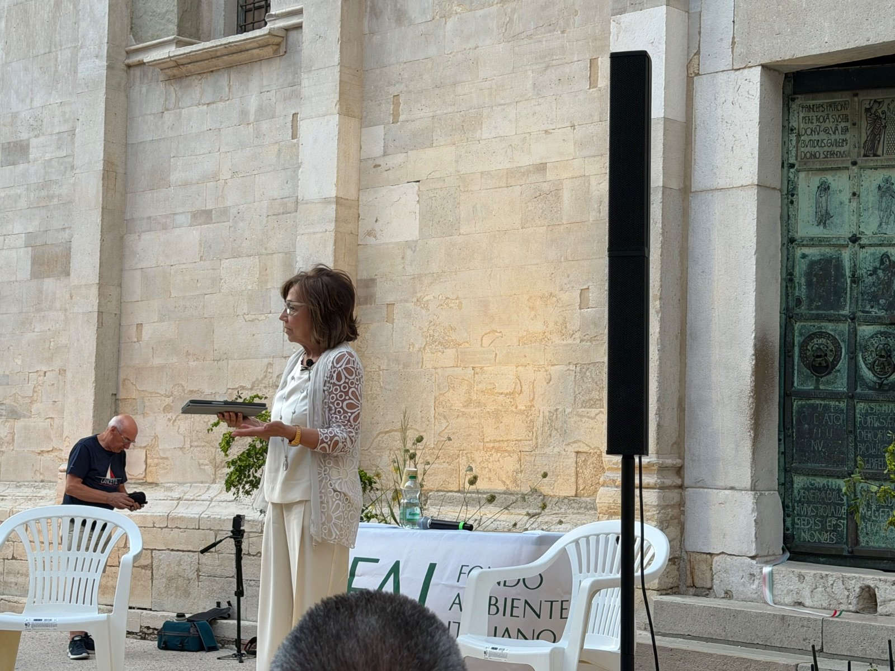
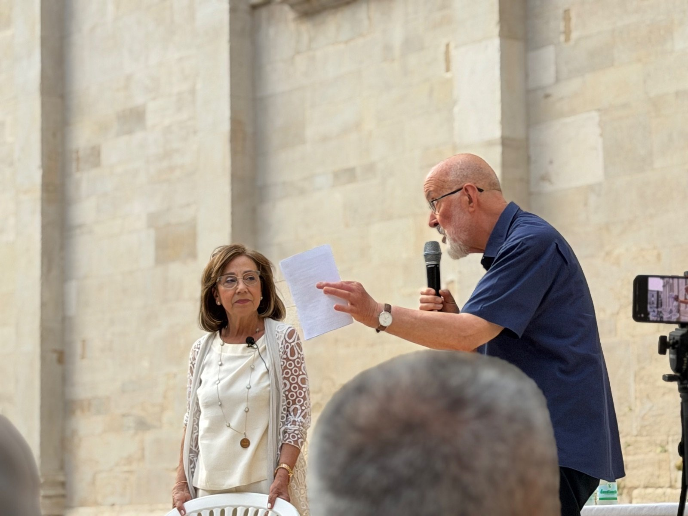
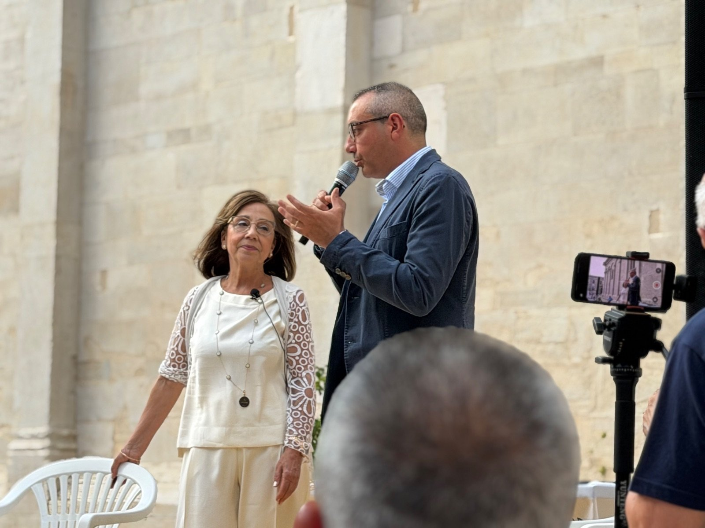
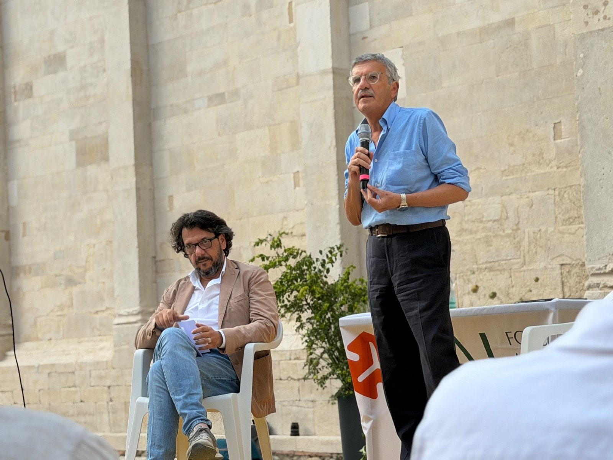
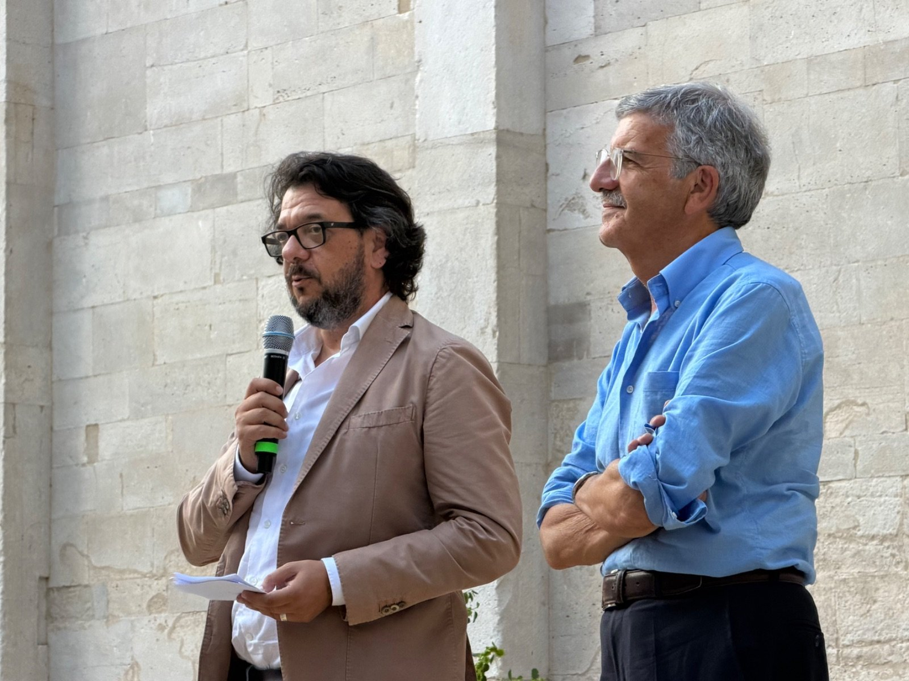
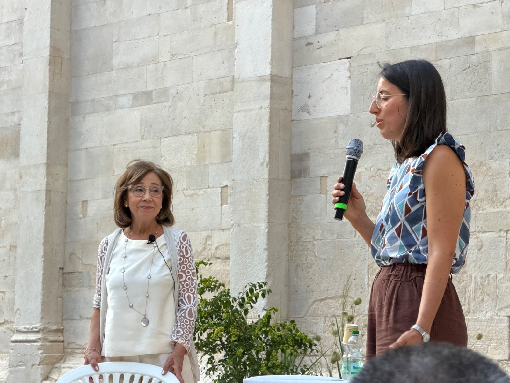
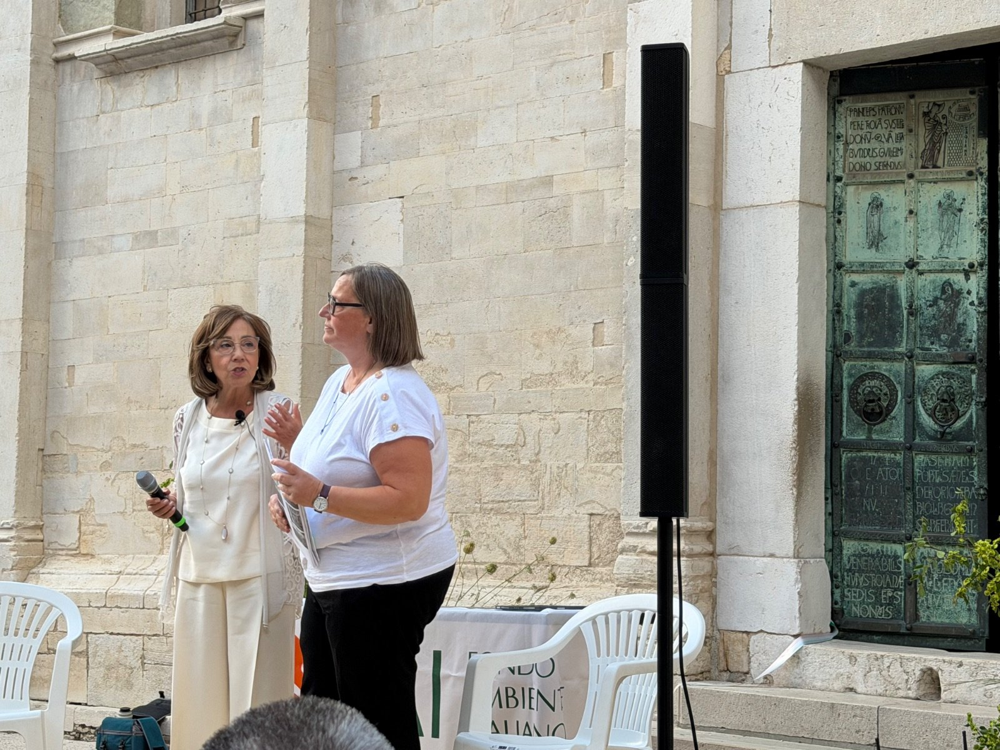
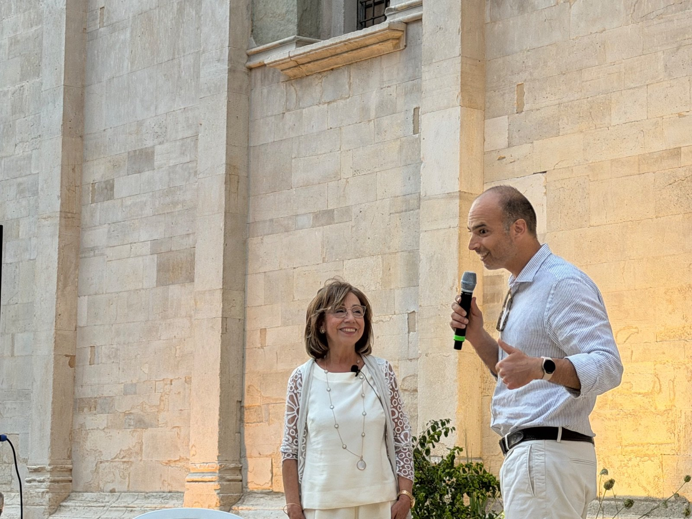
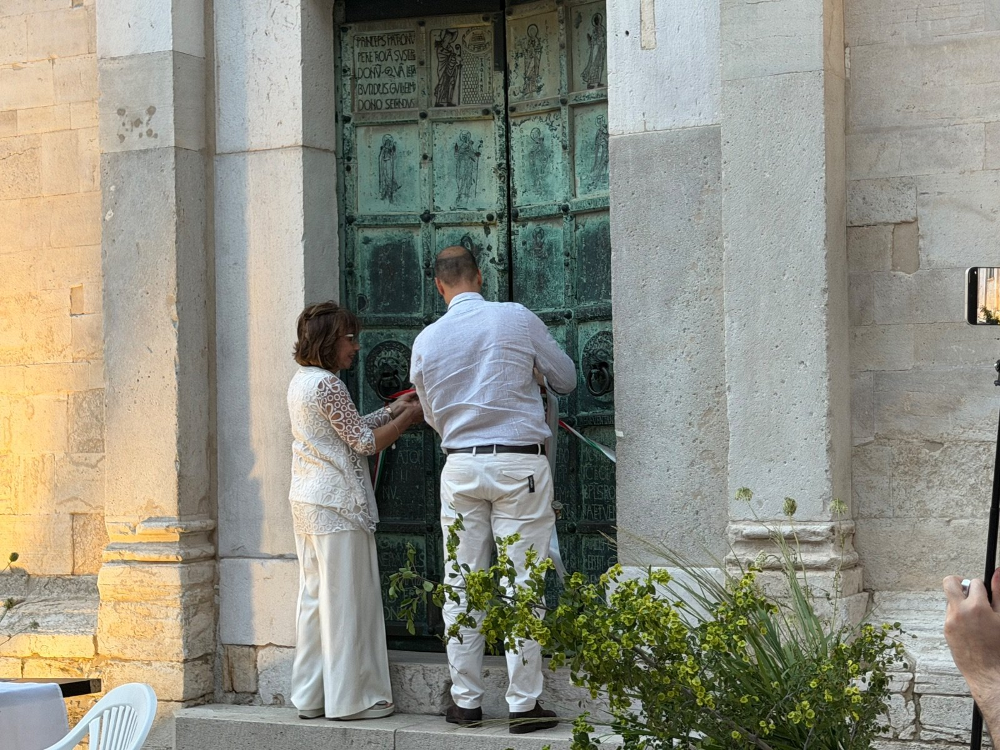

La Porta della Libertà si racconta: il convegno di presentazione del restauro
Una porta che parla di bronzo e di libertà, di fede e di storia, di identità e di futuro. La presentazione ufficiale del progetto di restauro della Porta della Libertà ha riunito a Troia istituzioni, esperti e cittadini intorno all'opera che Oderisio da Benevento scolpì nel 1127 per la Cattedrale della città. Un pomeriggio di voci diverse, ciascuna capace di illuminare un aspetto diverso di un bene che appartiene a tutti.

Il valore storico-artistico: la parola alla promotrice
Ad aprire i lavori è stata la prof.ssa Mina De Santis, promotrice dell'iniziativa e principale artefice del percorso che ha condotto la Porta della Libertà fino al censimento FAI dei Luoghi del Cuore. De Santis ha ripercorso la storia dell'opera — i ventiquattro pannelli in bronzo ageminato, i sei registri orizzontali, l'iscrizione che celebra la lotta del popolo troiano contro Ruggero II — restituendone la straordinaria densità storica, artistica e culturale. Una fonte irripetibile che custodisce la data di fondazione della città e la cronotassi episcopale dei suoi primi centotto anni.

Una soglia tra due mondi: il significato catecumenale
Don Paolo Paolella, in rappresentanza della Chiesa Troiana, ha offerto una lettura spirituale e simbolica dell'opera. La porta, ha spiegato, non è solo monumento: è soglia. Il passaggio fisico attraverso i suoi battenti di bronzo richiama il cammino catecumenale, il transito dalla schiavitù alla libertà, dalla tenebra alla luce. Un messaggio che il Medioevo ha saputo fondere in materia e che continua, a quasi novecento anni di distanza, a parlare a chi varca la cattedrale.

Il contributo del Comune e il futuro del territorio
Francesco Caserta, Sindaco di Troia, ha portato la voce dell'amministrazione comunale che ha affiancato il progetto sin dalle prime fasi, contribuendo alla raccolta fondi e garantendo il patrocinio istituzionale. Caserta ha sottolineato come il restauro della Porta della Libertà si inserisca in una visione più ampia di valorizzazione del territorio, anticipando una delle iniziative più attese: il progetto del nuovo Museo Civico di Troia, che si propone di raccogliere e rendere accessibile al pubblico il patrimonio storico, artistico e documentale della città. Un segnale concreto di come la tutela del passato e l'investimento sul futuro possano procedere insieme.

Il FAI e la tutela del patrimonio pugliese
Il prof. Saverio Russo, presidente regionale del FAI, ha portato la voce dell'associazione che ha contribuito in modo determinante al finanziamento del restauro. Russo ha ricordato l'impegno decennale del FAI nella tutela del patrimonio culturale pugliese e ha sottolineato come la mobilitazione spontanea dei cittadini intorno alla Porta della Libertà — votata tra i Luoghi del Cuore nella XII edizione del censimento — rappresenti un esempio virtuoso di come la partecipazione popolare possa tradursi in azione concreta e risultati tangibili.

Dai voti al cantiere: il meccanismo dei Luoghi del Cuore
L'arch. Beniamino Attoma Pepe, responsabile regionale per il censimento dei Luoghi del Cuore in Puglia, ha illustrato il percorso che trasforma i voti dei cittadini in finanziamenti reali. Negli anni, ha spiegato, il programma ha permesso di tutelare e valorizzare decine di beni in tutto il territorio nazionale. La Puglia si conferma tra le regioni più attive, e il caso della Porta della Libertà ne è una dimostrazione concreta: dalla raccolta firme alla firma del contratto di restauro, passando per il contributo di FAI e Intesa Sanpaolo e il supporto del Comune e dei privati.

La Soprintendenza: scienza, tutela e didattica
La dott.ssa Gaia Caula, funzionaria restauratrice della SABAP per le province di BAT e Foggia, ha illustrato il ruolo della Soprintendenza nel processo di tutela dell'opera. Oltre all'aspetto conservativo, Caula ha posto l'accento su una dimensione spesso trascurata: il valore didattico e scientifico del restauro. Un intervento di questa portata non si limita a restituire alla porta il suo aspetto originario, ma produce conoscenza, documentazione e metodo — un patrimonio di dati destinato a diventare riferimento per il restauro di opere analoghe nel futuro.

Dal degrado alla rinascita: i dettagli tecnici
A chiudere la serie di interventi è stata la dott.ssa Loredana La Torre, progettista ed esecutrice del restauro, che ha guidato i presenti in un percorso tecnico rigoroso e appassionante. Partendo dalla documentazione dello stato di degrado — avanzati processi di ossidazione, perdite materiche, fessurazioni nella struttura metallica — ha illustrato le lavorazioni necessarie per la conservazione e il consolidamento delle superfici bronzee. Un intervento complesso, condotto con metodo e competenza, che restituirà alla città e al mondo uno dei più straordinari esempi di arte medievale del Mezzogiorno d'Italia.

Il gesto che inaugura i lavori
A chiudere il convegno è stato Alessandro Altobelli, in rappresentanza di ECEPLAST, tra i cofinanziatori privati che hanno reso possibile il restauro. Altobelli ha rivolto un ringraziamento sentito alla prof.ssa De Santis per la tenacia e la visione con cui ha condotto l'iniziativa, portando una comunità intera a mobilitarsi attorno a un'opera che rischiava di essere dimenticata. Il suo intervento si è concluso con un gesto carico di significato: la chiusura formale della porta, atto simbolico e ufficiale che ha inaugurato i lavori di restauro. Una porta che si chiude perché possa tornare a raccontare la propria storia.

